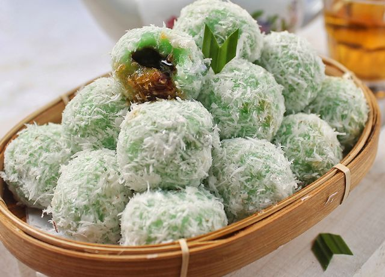
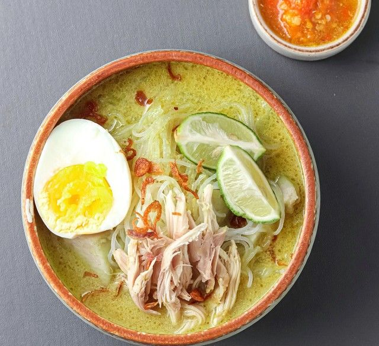

Deppa Tori'

Klepon

Soto ayam

Welcome! Every recipe on this site comes from Indonesia’s rich culinary heritage, from everyday home cooking to beloved regional specialties passed down through generations. Stretching across thousands of islands, Indonesia is home to a remarkable variety of dishes, each shaped by its own local ingredients, spices, and traditions. Here you’ll find clear, step-by-step recipes to help you bring those authentic flavors to your own table. Browse the collection, pick a dish, and start cooking.

